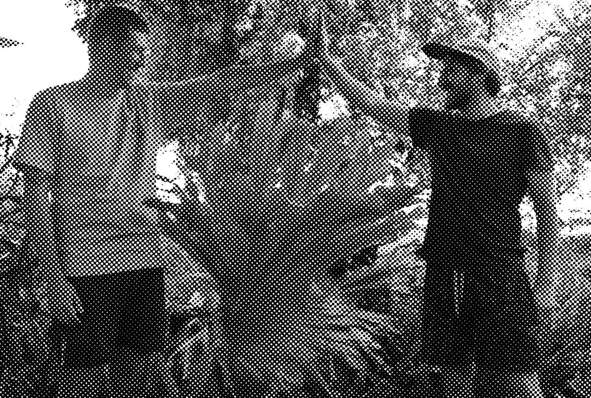

| Elecho Plant debut with first ever single Moving 7 April 2016 |
|  |
Fresh from the streets of Sydney comes a brand new project called Elecho Plant, emerging hand in hand with their debut single Moving. Clocking in at just over six minutes, this grooving journey spirals through varying extremes of sounds, egged on by bouncing drums and built upon by expansive and experimental guitars. The rest of this swirling puzzle is finished with minimalist vocals that shout, croon and speak simple refrains, fitting in just right. As a debut, Moving is centred by a need for experimentation. It’s equal parts dirty and groovy, with both halves coming together to see they band successfully shrug of any expectations for a first single. And just to give you a better idea, Elecho Plant has described the song themselves: “If James Brown was a pro skater he would probably listen to this song every morning before munching on some hash browns!”. Elecho Plant have hinted at a debut EP coming sometime in the near future. |